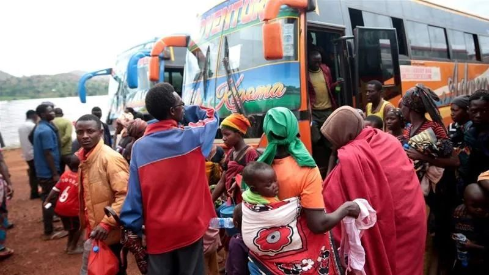
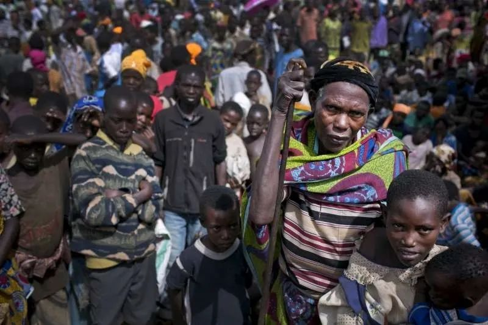
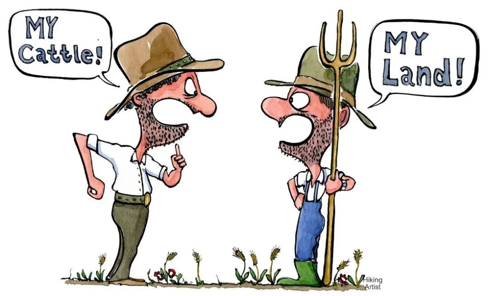

收录于合集

作品简介
【作者】 Stephanie Schwartz，南加州大学国际关系学院副教授，主要研究方向为被迫移民、暴力与和平建设，其研究成果荣获2019年美国政治学会（American Political Science Association）移民与公民权类别最佳论文奖。
【编译】 阮辰阳（国政学人编译员，复旦大学国际政治系本科生）
【校对】 刘颖哲
【审核】 柯孜凝
【排版】 谭誉豪
【美编 】聂涵琳
【来源】 Schwartz, Stephanie. “Home, Again: Refugee Return and Post-Conflict Violence in Burundi.” International Security 44.2 (2019): 110-145.
期刊简介
《国际安全》（International Security）是经过国际和国家安全领域同行评议的顶级学术期刊，其刊发的论文主题广泛，涵盖战争与和平等传统安全问题与环境、人口、人道主义、恐怖主义等时新的安全议题。它成立于1976年，由哈佛大学贝尔弗科学与国际事务中心（Belfer Center for Science and International Affairs at Harvard University）编辑，麻省理工学院出版社（MIT Press）出版，每年四期。2019年影响力因子为5.432，在“国际关系”类别的95种期刊中排名第1位。
再次归家：难民返乡与后冲突时代
布隆迪的暴力状况
Home, Again: Refugee Return and Post-Conflict Violence in Burundi
Stephanie Schwartz
内容提要
本文围绕难民返乡展开论述，观点十分独到。过往学者研究认为，难民返乡往往标志着一国局势趋于稳定；然而，本文指出难民返乡反而可能会激化原籍国国内矛盾。内战后的难民返乡，会造成涌入国内的返乡难民与内战时选择居留的居民这两大群体之间形成身份差异，这一差异由于国内制度安排不当可能会上升至群体间冲突。例如，布隆迪2005年内战结束后的土地管理政策，使返乡难民与本地居民围绕土地所有权展开激烈争夺，进而相互敌视。为了避免难民返乡后的群体间冲突，所在国政府应针对新形势妥善调整制度安排以平衡不同身份群体的利益诉求，从而有利于战后和平建设。
文章导读
内战后返乡的难民与本地人群之间的冲突是多数社会面临的普遍问题。两大群体之间的冲突主要体现在就业竞争、土地占有的竞争以及城市中心的青年帮派暴力之中。因而，这些返乡家庭经常遭到本地人口的暴力抵制，迫使前者再次逃亡。
移民返乡后仍身处不安全环境，这一现象与常识相悖。一般认为，遣返是解决移民危机的方法。例如，和平协议中有关促进移民返乡的规定旨在消除战争的负面影响，而难民返乡通常被视为战后稳定的指标。此外，研究者们往往忽略了对返乡移民安全问题的研究，反而更关心于探究移民外迁与内战的联系及移民外迁的影响。
然而，研究者若要充分理解移民外迁现象，就必须考察移民返乡与再外迁的循环。如果当局不重视大规模返乡导致的社区结构变化，该国的国家建设可能偏向返乡者或本地居民中的其中一方。这种偏向将加剧不同人群对私有产权、公共物品或公民权利的争夺，从而产生潜在的安全隐患。换言之，如果当局忽视了返乡移民与本地居民间的冲突，这将会对战后政府机构运转与合法性造成不利影响。
为了填补研究空白，本文将考察难民返乡、和平与安全之间的联系。作者将提供一种理论以说明战后返乡移民与本地居民间冲突的广泛程度及其他特点。作者认为，返乡移民将基于战时居住地的不同产生新的情境式身份分化（situational identity cleavages），这种身份分化会因当局战后机构对不同迁徙历史的个人给予的不同待遇而固化并演化为群体间冲突。作者将从五个部分展开论述。第一，返乡移民的理论以及研究方法；第二，1993年到2005年内战后，布隆迪大规模移民返乡如何造成返乡移民与本地居民间的相互敌视，以及这种敌视如何在围绕土地展开的地方性冲突中体现出来；第三，布隆迪土地管理的地方制度安排如何固化返乡移民与本地居民的分裂；第四，由于先前返乡移民激发了新的地方冲突，当全国性选举危机在2015年发生时，原先的返乡者倾向于再次逃离布隆迪并前往坦桑尼亚避难，过往的移民返乡经历塑造了2015年新一轮人群的迁徙特点及迁徙时机；最后，总结全文并讨论该研究的现实意义。

图1.从坦桑尼亚返乡的布隆迪移民
（图源见文末）
01
理论与实证方法
本理论的提出基于人类学与社会学文献中有关政治暴力的两大重要发现。第一，学者已证明战时被迫移民的经历会改变个人的身份观念、偏好认知及国内外社会联系。第二，研究表明个人内战期间遭受暴力的经历常常来自土地所有权争夺、宗族竞争及村落不平等现象等地方层面的社会冲突。这些地方性冲突独立于全国范围内因宗教、民族或政治态度不同而造成的分裂。
基于前人发现，作者提出了自己的论点。首先， 他认为内战后移民返乡会产生基于战时居住地的新的地区分化。 这一分化可以出现在本地居民与外迁移民之间，也可以进一步按照迁徙类型（境内或境外）、战时居住地特点（所属地区、与原籍国的政治关系、语言等）或迁徙时间（例如逃难时间与时长）做出分化。
其次， 这些基于迁徙情况的分化因内战后制度安排对不同迁徙历史的个人的不同对待方式而固化。 例如，原籍国的国家语言法会影响之前在长期外迁居住并操另一语言的返乡者，他们的就业、教育和医疗机会被法律所限制。非正式的土地继承惯例在家庭成员返乡寻求重新定居的情形下会成为冲突来源。当个人确认由自身迁徙历史所界定的社会地位时，他将相应地调整未来的政治或社会行为。例如，当南苏丹的国家语言法禁止说阿拉伯语的返乡者在政府谋职时，当返乡者被认为不及留在国内为国而战的人爱国时，返乡者会认为他们无法谋职是因本地居民的阻挠所致。他们会因此改变其他方面的政治、经济与社会行为。当然，政治精英会为自身战略利益利用返乡移民与本地居民的冲突。
此外， 前一轮内战后返乡移民与本地居民的冲突会在新一轮内战中体现出来。 作者在研究中发现，难民不仅因全国性政治冲突造成的种种事态（如党派斗争、威胁入伍、对反对派的镇压或单纯对战争的恐惧）而逃难，相当一部分难民逃离原籍国的原因也包含返乡移民与本地居民分裂所导致的土地所有权斗争。作者通过调查发现，2015年新一轮内战爆发前已有布隆迪难民试图逃难，这进一步加强了因返乡移民与本地居民的既有冲突而逃难这一说法的解释力。
实证方法上，作者通过深入的民族志案例分析，采用半结构访谈、重复交互与元数据，研究1993年到2005年布隆迪内战后的难民返乡情况。
02
布隆迪返乡移民与本地居民的身份冲突
本文考察布隆迪发生的三次移民潮。1972年，图西族政府对胡图族民众的种族屠杀引发第一波移民潮，逃难者被迫跨越边界前往坦桑尼亚的难民营。第二波移民潮自1993年时任总统被暗杀后开始，并在1996-1997年内战最初阶段达到高峰，难民主体仍为逃往坦桑尼亚的胡图族民众，而图西族民众多选择留在本国。2015年的政治危机造成了第三波移民潮，大部分难民逃往坦桑尼亚，剩下前往卢旺达、刚果（金）与乌干达。值得注意的是，在每一波移民潮中，政府官员和留在本地的居民都侵占了逃亡者抛弃的土地，而许多逃亡者正因担心自己土地被侵占后无处安顿而拒绝返乡。
图2.一位疑似布隆迪亲政府青年民兵组织的成员恳求士兵们
保护他不受到示威游行者的伤害（布隆迪，2015年5月）
1993-2005年内战结束后，移民返乡激化了布隆迪广泛发生的地方暴力事件。这些冲突不仅源于死灰复燃的民族争端，还源于返乡移民和本地居民间形成的新的争端。作者通过称谓差异（group labeling）与特征差异（attribution of group characteristic） 证明返乡移民和本地居民身份差异的存在且相对民族身份差异而独立。 称谓差异方面，布隆迪社区中的受访者表示，村内对返乡移民与本地居民分别用特定称谓来指代，例如当地语言中称返乡移民为Abahunguste，称本地居民为Abasangwa。此外，本地居民通常还称返乡移民为“坦桑尼亚人”或“刚果人”（即返乡移民的战时居住地），这使返乡移民感到被冒犯。特征差异方面，本地居民与返乡移民在语言的使用和穿着方面都有明显差别。返乡移民多沿袭其在坦桑尼亚的习俗，例如返乡后仍操斯瓦希里语（坦桑尼亚的官方语言），再如返乡女性移民的发饰仍与坦桑尼亚人保持一致。另外，返乡移民和本地居民的身份差异之所以相对民族身份差异独立，是因为尽管返乡移民多数都是胡图族人，本地居民中分别都有相当数量的胡图族、图西族与图瓦族（Twa）人。况且，返乡移民和本地居民的身份差异时常会在同一家族的不同成员之间产生，他们的所属民族相同，但在战时分别选择了居留与外迁。
返乡移民与本地居民由于身份差异（包括返乡移民内部的身份差异）造成的紧张关系容易引起相互歧视。紧张关系不仅是社会层面的，还是政治层面的，亦围绕土地冲突展开 。社会层面上，一方面，返乡移民无法享受医保，而且其身份证不同于其他公民；另一方面，本地居民抱怨政府优先救助返乡移民。政治层面上，由于现执政党亲属多为1972年移民潮的逃难者，政府政策会偏向1972年移民；然而，由于1993年移民潮的难民在现执政党2005年上台执政后没有返回布隆迪，这批难民便被界定为反对党支持者，遭到当前政府的歧视与忽视。
紧张关系最为集中表现在双方围绕土地的冲突上。 对很多布隆迪人来说，其政治和社会身份是与祖传土地紧密联系在一起的。此外，约有90%的布隆迪人依赖小农农业谋生。土地资源之于布隆迪人的重要性可见一斑，而大规模人口返乡将给稀缺土地资源带来更大压力。因为土地在内战期间被占据、征用或买卖，经常发生的情况是，返乡移民和本地居民双方都声称对同一片土地拥有所有权。因此，即使返乡移民没有提出土地要求，他们在当地的存在也会给本地居民造成潜在威胁。本地居民会因失去土地的威胁而加深他们与返乡移民之间的不信任与暴力冲突，骚扰、毁坏庄稼、暴力威胁、身体攻击甚至谋杀的情况时有发生。
03
布隆迪土地管理制度固化返乡移民与本地居民的身份冲突
返乡移民与本地居民的冲突因土地管理与产权制度给予不同迁移历史的群体不同待遇而显得更为严重和广泛。 由于执政党向1972年种族屠杀下被迫逃亡的返乡移民进行财产赔偿，同时国际社会也优先帮助1972年移民潮的返乡移民收回土地，这一批次的返乡难民在土地冲突中相比本地居民和1993年移民潮的返乡移民更具优势。相反，1993年难民潮的返乡移民由于被污蔑为反对党支持者并且被国际社会认定不需要受到援助及收回土地，这些移民在土地竞争中处于最为不利的地位，几乎没有能力赶走占有争议财产的本地居民。
非正式与正式的土地管理惯例均固化了返乡移民与本地居民之间的暴力冲突。一方面， 在父系土地继承（patrilineal inheritance of land）的非正式传统影响下，围绕土地的冲突往往发生在同一家族（并且是同一民族）内迁移历史不同的男性成员之间； 这一现象亦证明返乡移民与本地居民间的身份差异独立于民族身份差异之外而存在。另一方面， 布隆迪联邦土地委员会（Commission Nationale des Terres et Autres Biens, CNTB）所制定的土地惯例与产权的正式制度对返乡移民与本地居民之间的暴力冲突有着更为深远的影响。 该委员会最初实施的是返乡移民与本地居民共享土地的政策，但人们可以通过向常规司法系统上诉的方式来推翻委员会的决定。返乡者（尤其是1993年移民潮的返乡者）由于缺少政治和经济资本，担心被报复而不敢提起上诉。相反，数十载都以土地为生的本地居民拥有更多资源，因此他们有能力在上诉中获得优势且可以使用资源收买官员。这种在政策执行层面的不透明性使委员会无法调和返乡移民与本地居民之间的冲突。随后，委员会调整了政策，要求本地居民需要将所有土地和财产返还给返乡移民（尤其是返还给1972年难民潮的那一批移民）。这一政策虽然有一定公正性，但将问题进行了过于简单化的处理。政府以为这些居民被迫离开争议土地后可以前往他们剩下的其他土地，可实际情况是，居民们在争议土地上生活了数十载，已经没有其他土地可以定居。更糟糕的是，这一政策变动溯及既往，导致先前争议双方已达成的共享土地的决定作废。因此，更新后的政策进一步恶化了返乡移民与本地居民之间的关系，固化了两者之间的隔阂；同时，人们对委员会也愈发不满，发起了针对委员会的暴力抗议，导致2015年总统下令暂停委员会的活动。土地管理制度之外，不同迁移历史的人群在诸如合法公民权与教育等其他社会领域也备受歧视。这些歧视现象都是因返乡移民和本地居民的身份差异而产生，并基于土地冲突而延伸开来的。
04
返乡的遗产：2015年逃难与居留的选择
2015年，布隆迪按计划举行总统大选。宪法规定总统任期最多两届，然而2015年4月执政党宣布时任总统将寻求第三任期。这一声明立刻引发大规模抗议，引起反对派的武装反叛，政府随即开始镇压被认为是支持反对党或对政权表示不满的人。危机造成了大规模的流离失所现象：截至2015年5月，十万多名布隆迪人已经逃往邻近国家，难民在后面几个月也源源不断地成批逃难。
观察者起初认为，2015年危机之中，逃难者和居留者的矛盾在于政治立场不同，即逃难者支持反对派一方，而居留者支持总统及其联盟一方。然而，作者认为过往的移民返乡经历也对个人去留造成了影响。

图3.等待接受难民营救助的布隆迪难民
谁在逃亡？地方与全国性的暴力威胁
难民对于逃亡原因的解释反映出了两类安全问题，即全国性选举危机及与移民返乡历史有关的地方冲突，二者时而相互独立，时而相互交织。 逃亡难民可分为以下三类。第一类难民认为自己选择逃亡是由于之前返乡后引起的返乡移民与本地居民间冲突而非全国性冲突，他们在与本地居民的地方冲突中无法获得土地，因此只得逃亡。第二类难民强调他们逃亡的主要原因在于全国性冲突下的政治镇压、折磨、入伍压力与对全面战争的恐惧，冲突围绕执政党与反对党展开。第三类难民则认为全国性政治冲突及与移民返乡历史有关的地方冲突均促成他们的逃亡决定，三类中大多数难民都认为两种冲突是相互交织的。在不断升级的政治动乱背后，与返乡移民为敌的本地居民可以不受惩罚地采取对抗行动。 这些居民通常与执政党有直接或间接的联系，可以利用执政党的镇压行动来获取武器，并以忠诚于党的名义实施自己的复仇计划。此外，许多采访对象表示，返乡移民通常会被他们战时留在布隆迪的其他家庭成员指控参加反对党活动，这些指控者将其作为恐吓返乡移民离开原有土地的方式。
**
**
何时逃亡？时机的把握
1993-2005年内战后返乡移民造成的地方冲突不仅能够决定2015年危机下谁会逃亡，还会决定难民何时逃亡。 前几个月逃亡的难民多为妇女和儿童，他们中许多人都是多次逃难的移民。这些早期逃亡者常以上次返乡产生的土地冲突等问题作为他们再次逃亡的首要原因，而这些问题早在2015年危机之前就暴露出来了。2015年7月中下旬以后的晚期逃亡者通常将政治迫害作为他们逃亡的首要原因。他们更多是首次出逃，且多为拥有土地的男性。
谁留在了布隆迪？
危机中继续留在布隆迪的人群多为本地居民及1972年难民潮中受返乡负面影响较小的移民。 他们对于安全的感知不同于逃亡者，既不认为返乡移民与本地居民之间的土地冲突威胁到他们的安全，也不觉得政治动荡造成了不安全的局势。他们有的认为逃亡者听信战争谣言而非遭受真实暴力就逃离布隆迪，有的嘲笑逃亡难民只是为了获得联合国的救济或为了在美国定居。这些认知表明， 这一类人群很可能是土地冲突中的获胜方或是在冲突中威胁使用暴力的一方。 当然， 他们也可能是因害怕执政党报复无法透露真实的暴力情况； 另外，在他们对于逃亡难民较低评价的背后反映出的，是执政党在向他们灌输“逃亡者是胆小的、不忠诚的或支持反对派的人群”的观念。此外， 他们大多在国内有经济资产需要保护，为了保有自身的土地或工作而不愿逃亡。
05
总结
难民大规模返回原籍国通常被认为是国家和平与稳定增加的标志。然而，移民返乡实际上对刚从内战中恢复的国家而言是一个不安全的因素。移民外迁与返乡的过程会加剧既有争斗，且会造成返乡移民与本地居民出现新的分化。当冲突后的制度有意或无意地根据战时居住地给予不同人群差别待遇时，外迁移民身份将会固化并诱发暴力。
以上情形均在战后的布隆迪有所体现。 1993年到2005年内战结束后的布隆迪返乡移民在既有的民族和政治分裂的基础上在社区层面形成了返乡者与居民的分化。 当地的土地治理政策使返乡者与居民之间围绕土地展开了激烈争夺。2015年发生在布隆迪的第三任期危机激化了两大群体间的冲突。成千上万的布隆迪人因被怀疑从属于反对党或对政权有所批判而面临政府镇压，他们为了躲避镇压选择逃离祖国。尽管如此，选择逃离还是留下并不仅仅取决于是支持反对党还是执政党。实际上，这一选举危机在彰显国家层面党派冲突的同时，也激化了地方层面返乡者与本地居民之间的冲突。还没有获得土地的返乡者担心当地居民会趁国家混乱时欺压他们却不会受到任何官方惩罚，因而这些返乡者被迫成为了第一批逃至坦桑尼亚的群体。随着国内冲突进一步发展，后来逃至坦桑尼亚的群体更多地与反对组织有直接联系或有被执政党攻击的经历。
了解返乡移民导致国内暴力的机理对处理难民危机的政策制定者而言非常重要。在制度安排方面，政策制定者也需要确保和平建设过程中的制度安排能够满足不同群体的不同需求，不会徒增返乡移民与本地居民间的冲突。

图4.“土地冲突”漫画
译者评述
本文的创新之处在于解释了移民返乡后生成新冲突的机理，而这一点一般容易被政策制定者忽视。以下将从 移民返乡后的生活处境、移民返乡后生活处境不同的原因 与 安置返乡移民的政策建议 三个角度对本文进行补充论述。
如作者所述， 移民 （尤其是1993年移民潮的一批） 返乡后在国内社会地位与土地竞争方面处于不利境地， 这在其他研究中也得到了证实。在另一项针对布隆迪返乡移民调查中，数据显示返乡移民不认为移民经历提升了他们在布隆迪的社会地位，却赞同移民经历使他们与本地社区更加疏远。[1]如果选择另一国家为例，在厄立特里亚移民返乡的案例中，返乡移民与本地居民会围绕木柴、草场与土地等稀缺的自然资源进行竞争。尤其是在土地方面，与布隆迪案例相同，土地冲突仍然是横贯于返乡移民与本地居民之间的一大难题，在对返乡移民家庭的调查中，移民返乡后土地占有比例从逃难前的73%下降到40.5%，每户平均占有土地面积也从逃难前2.17公顷跌落至0.5公顷；直到2000年，返乡移民都还在等待政府有关土地偿还的法令。[2]这些数据表明，返乡移民归国后的境遇不容乐观。
返乡移民在与本地居民的比较中生活境况处于劣势，而 返乡移民因其民族身份、迁徙时长、战时居住地、原籍国的社交网络情况等方面有所不同会进一步产生内部分化，从而导致移民返乡后的实际处境各有不同。
民族身份可以作为区分返乡移民的标准。研究表明，90年代克罗地亚战争后，从波斯尼亚返乡的克族移民能够充分融入克罗地亚，而作为少数民族的塞族返乡移民却受到克罗地亚政府的不公正对待而难以融入原籍国。本地居民与返乡移民不仅本身可以成为分化身份的依据，他们的民族属性亦可以作为独立的分化标准。[3]
在迁徙时长方面，一般认为，长时间的流离失所会导致诸多危险状况，并对原籍国和难民本人造成不良影响。然而，一项对布隆迪返乡移民的研究表明，移民迁徙时间越长，返乡后的社会地位越高。[4] 其背后原因仍待探究。
在战时居住地特征方面，有学者指出了住在难民营和城镇的布隆迪难民在身份认同上的巨大差别。营地中的难民对自身胡图族民族身份高度认同，且推崇一种民族神话的历史叙事；而城镇中的难民身份认同飘忽不定，缺少共同身份（甚至不认同自己的难民身份），并排斥任何历史统一叙事。两地难民之间的身份差异进一步造成了相互敌视的态度。[5]由此可以推测，两大群体返乡后，营地难民因身份认同将更能融入原籍国，而城镇难民的身份缺失可能会造成其与本地居民及其他返乡移民群体之间的冲突。
返乡移民在原籍国的社交网络情况也会使返乡移民内部产生分化。针对利比里亚返乡移民的一项研究表明，移民融入原籍国的程度与他们在原籍国拥有的资源有关，特别是在原籍国的社交网络状况。在个人社交网络中，家族亲属起到最为基础可靠的支持作用，能够在返乡早期解决移民的食宿问题；若与家庭亲属失联，则需要求助于在战时居住地结交的朋友。因而，返乡移民在原籍国的社交网络中如果包含强关系，他将比只拥有弱关系的移民更容易融入原籍国生活且生活成本更低。[6]
因此，如何保障返乡移民的基本生活水平成为了摆在政策制定者面前的一道难题。布隆迪政府可以考虑延续2000年代以来与联合国合作建设的 “和平村庄” 以永久性安置返乡移民。 在此基础上，政府应该超越仅仅是给予返乡移民土地与住房的举措，进一步 发掘返乡移民的技能 （例如英语能力） 与内在潜力 ，并以此为基础提出返乡移民重新融入原籍国的改进措施。[7]
参考文献
[1] Ruiz, Isabel, Melissa Siegel, and Carlos Vargas-Silva. “Forced up or down? The impact of forced migration on social status.” Journal of Refugee Studies 28.2 (2015): 191.
[2] Bascom, Johnathan. “The long,‘last step’? Reintegration of repatriates in Eritrea.” Journal of Refugee Studies 18.2 (2005): 165-180.
[3] Blitz, Brad K. “Refugee returns, civic differentiation, and minority rights in Croatia 1991–2004.” J ournal of Refugee Studies 18.3 (2005): 362-386.
[4] Ruiz, Isabel, Melissa Siegel, and Carlos Vargas-Silva. “Forced up or down? The impact of forced migration on social status.” Journal of Refugee Studies 28.2 (2015): 198.
[5] Haugerud, Review By: Angelique . “Purity and Exile: Violence, Memory, and National Cosmology among Hutu Refugees in Tanzaniaby Liisa H. Malkki.” International Journal of African Historical Studies 31.1(1998):214-216.
[6] Omata, Naohiko. “Repatriation and integration of Liberian refugees from Ghana: The importance of personal networks in the country of origin.” Journal of Refugee Studies 26.2 (2013): 265-282.
[7] Falisse, Jean-Benoît, and René Claude Niyonkuru. “Social engineering for reintegration: Peace villages for the ‘uprooted’returnees in Burundi.” Journal of Refugee Studies 28.3 (2015): 388-411.
图源链接
[1] https://www.aljazeera.com/news/2019/10/burundi-refugees-leave-tanzania- mass-repatriation-starts-191003151945180.html
[2] https://www.theguardian.com/global-development/2015/dec/21/united-nations- burundi-prevent-escalating-violence-african-union-peacekeepers
[3] https://www.unhcr.org/554c83d46.html
[4] https://www.azunusrealty.com/land-conflicts-causes-and-solutions/
文章观点不代表本平台观点，本平台评译分享的文章均出于专业学习之用, 不以任何盈利为目的，内容主要呈现对原文的介绍，原文内容请通过各高校购买的数据库自行下载
**
**
**
**
**
**
添加 “国小政”微信
获取最新资讯


国政学人
支持学术公益与知识传播
微信扫一扫赞赏作者 __赞赏
已喜欢，对作者说句悄悄话
取消 __
发送给作者
发送
最多40字，当前共字
上一页 1/3 下一页
长按二维码向我转账
支持学术公益与知识传播
受苹果公司新规定影响，微信 iOS 版的赞赏功能被关闭，可通过二维码转账支持公众号。